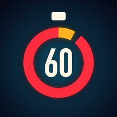

FINAL SIXTY
The last moments that changed history.
Final Sixty is a YouTube history channel. Each Short tells the last sixty seconds before a famous moment, with a real countdown that hits zero on the moment itself. Longer deep dives tell the whole story, minute by minute.
Every fact is sourced and every source is listed in the video description. Images are public-domain archive photographs and paintings.